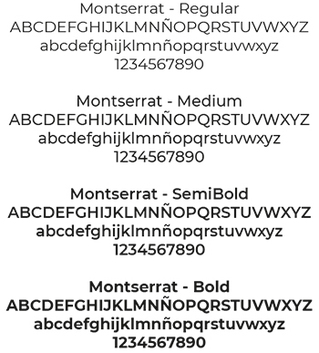
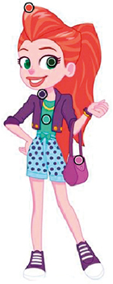

Tipografía
En esta sección se presenta la familia tipográfica y la paleta cromática elegida para el armado del sitio web Lila Draper.
Para el diseño del, se eligió la familia tipográfica Montserrat, ya que es una Sans Serif y permite una clara y muy buena legibilidad para el usuario. Sus variables se utilizaron para generar jerarquía de lectura en cada sección de la página.
A continuación te presentamos esta familia tipográfica con sus variables utilizadas:

Paleta cromática
Se eligió la paleta cromática de la gama del Violeta, Naranja y Verde, ya que estos colores remiten a la escencia del personaje. Sus cambios de saturación y combinaciones provocan una jerarquía de elementos en cada parte de la página. Les mostramos la paleta y su composición hexadecimal, y la imagen de la cual se tomó esta paleta:
